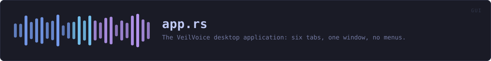

crates/veilvoice-gui/src/app.rs
veilvoice-gui · 1339 lines · read the source
The VeilVoice desktop application: seven tabs, one window, no menus.
One window, seven tabs, no menus and no settings file to hunt for. This file owns the window: the tab strip, the state behind it, and the rules about what the user is allowed to do before they have answered the questions that matter. The tabs themselves live partly here and partly in siblings -- crate::security draws the lock tab and the unlock screen, crate::prefs draws settings.
The seven tabs, and why these seven
| Tab | What it is | |---|---| | anonymise file | Process a recording on disk. The default path. | | live scramble | Scramble a microphone in real time into a virtual cable. | | monitor | Which applications currently hold the microphone and camera. | | lock | The app lock, and a plain statement of what it is worth. | | settings | Colour scheme, animation, and where those choices are kept. | | install | Whether this copy is portable or installed, and the optional companions. | | about | Versions, licence, and the honest scope. |
There is no "advanced" tab and no hidden pane. Everything the program can do is reachable in one click from the strip, because a privacy tool whose important controls are buried is a privacy tool whose important controls do not get used.
Nothing slow runs on the UI thread
VeilVoiceApp::start_job spawns a worker and hands back an std::sync::mpsc receiver; VeilVoiceApp::poll_job drains it with try_recv once per frame. The window keeps painting while a job runs.
That split is not tidiness. A long recording takes real time to process, and sealing it runs Argon2id at 256 MiB, which is deliberately slow -- that is the whole point of a memory-hard KDF. Doing either on the UI thread means a frozen window and an operating system offering to kill the application, in the middle of the operation the user cares most about completing.
poll_job handles all three channel outcomes, including Disconnected -- a worker that panicked. The user is told the thread stopped rather than watching a progress state that will never finish.
The at-rest choice is enforced here, not merely offered
Recordings are encrypted at rest by default (locked decision 4.10), and a job cannot start until the user has answered the modal that appears if they try to turn that off. The rule is asserted by a test in this file rather than left as a property of the layout code, because "the button was disabled" is a claim about pixels and "the job refuses to start" is a claim about behaviour.
The worker encodes the WAV in memory and seals it before anything is written, so a recording that is going to be encrypted never touches the disk in the clear -- not even briefly, not even in a temporary file that would be deleted afterwards. Deleting a file does not remove its contents from a flash device; not writing it does.
Nothing that talks to the operating system runs on this thread
The device monitor is the one that got this wrong and shipped. It was polled straight from update, and asking Windows which applications hold the microphone cost about a hundred and ninety subprocesses -- so the window froze for seconds at a time, every two seconds. Both halves are fixed: veilvoice-watch now costs two subprocesses, and crate::watchfeed keeps even that on a thread of its own.
The rule this file keeps, and the reason the defect is worth a paragraph: update may read state and paint it, and may start work, and may never wait for any. A job, a lock operation, a monitor scan and an install all go to a worker and come back through a channel.
The monitor indicator
VeilVoiceApp::watch_indicator shows, in the header, whether anything is holding the microphone or camera right now, and clicking it goes to the monitor tab. It is polled on a timer rather than watched continuously, because the underlying platform code enumerates processes and doing that every frame would cost more than the rest of the window put together.
What it reports is bounded by what the platform allows, and veilvoice_watch::support() states that bound rather than letting an empty list imply an empty machine. The indicator must never present "we could not see" as "nothing is there".
A policy tightens the controls, and the tightening is not the drawing code
crate::policy::InForce holds whatever veilvoice policy fixed on this machine. Fixed controls are drawn disabled with the reason underneath, but that is a courtesy: the values a job actually uses come from VeilVoiceApp::posture, which applies the policy every time it is asked. A policy that held only while a checkbox was drawn would not be a policy, and this file already keeps that rule for the at-rest choice.
Where the honest limits are stated
The about tab carries the scope text, and the lock tab carries veilvoice_crypto::lock::SCOPE. Neither is decoration: tests fail the build if that wording is softened, because a user who over-trusts the app lock is left worse off than one who never had it. If you are editing text in this file and a test starts failing, it is that rule, and it is working.
WHAT THIS FILE CONTAINS
1339 lines defining 22 functions (1 public), 3 types and 0 constants. Everything below is read out of the source, so it cannot disagree with the code.
The types it owns.
enum Tabline 117 — The things VeilVoice does.enum JobDoneline 135 — Result of a background file job.struct VeilVoiceAppline 146 — Application state.
What happens when it runs. These are the ways in: public, and nothing else in this file calls them, so they are what an outside caller reaches first.
VeilVoiceApp::newline 280 — Build the app, applying theme and fonts to ctx.
WHAT CALLS WHAT
The functions this file defines, and the calls between them. An edge means the callee's name appears, called, inside the caller's body — a syntactic reading, not a type-resolved one.
The same graph as Mermaid source
%%{init: {"theme":"base","themeVariables":{"background":"#1a1b26","primaryColor":"#1f2335","primaryTextColor":"#c0caf5","primaryBorderColor":"#7aa2f7","secondaryColor":"#16161e","tertiaryColor":"#16161e","lineColor":"#737aa2","textColor":"#c0caf5","mainBkg":"#1f2335","nodeBorder":"#7aa2f7","clusterBkg":"#16161e","clusterBorder":"#2f3549","fontFamily":"ui-monospace, SFMono-Regular, Consolas, monospace","fontSize":"14px"}}}%%
flowchart TD
n_preferred_output["preferred_output<br/>line 203"]
n_preferred_input["preferred_input<br/>line 212"]
n_without_devices["VeilVoiceApp::without_devices<br/>line 226"]
n_default["VeilVoiceApp::default<br/>line 262"]
n_new(["VeilVoiceApp::new<br/>line 280"])
n_apply_policy["VeilVoiceApp::apply_policy<br/>line 321"]
n_posture["VeilVoiceApp::posture<br/>line 343"]
n_config["VeilVoiceApp::config<br/>line 353"]
n_update["VeilVoiceApp::update<br/>line 368"]
n_poll_job["VeilVoiceApp::poll_job<br/>line 485"]
n_settings["VeilVoiceApp::settings<br/>line 519"]
n_file_tab["VeilVoiceApp::file_tab<br/>line 583"]
n_start_job["VeilVoiceApp::start_job<br/>line 674"]
n_live_tab["VeilVoiceApp::live_tab<br/>line 730"]
n_start_live["VeilVoiceApp::start_live<br/>line 821"]
n_watch_indicator["VeilVoiceApp::watch_indicator<br/>line 836"]
n_watch_tab["VeilVoiceApp::watch_tab<br/>line 866"]
n_previous_crash["VeilVoiceApp::previous_crash<br/>line 949"]
n_about_tab["VeilVoiceApp::about_tab<br/>line 974"]
n_device_picker["device_picker<br/>line 1029"]
n_field["field<br/>line 1054"]
n_meter["meter<br/>line 1061"]
n_about_tab --> n_field
n_about_tab --> n_previous_crash
n_apply_policy --> n_posture
n_config --> n_posture
n_default --> n_preferred_input
n_default --> n_preferred_output
n_default --> n_without_devices
n_file_tab --> n_settings
n_file_tab --> n_start_job
n_live_tab --> n_device_picker
n_live_tab --> n_field
n_live_tab --> n_meter
n_live_tab --> n_settings
n_live_tab --> n_start_live
n_start_job --> n_config
n_start_job --> n_posture
n_start_live --> n_config
n_update --> n_about_tab
n_update --> n_file_tab
n_update --> n_live_tab
n_update --> n_poll_job
n_update --> n_watch_indicator
n_update --> n_watch_tab
click n_preferred_output href "https://github.com/tilas01/veilvoice/blob/main/crates/veilvoice-gui/src/app.rs#L203" "open the source"
click n_preferred_input href "https://github.com/tilas01/veilvoice/blob/main/crates/veilvoice-gui/src/app.rs#L212" "open the source"
click n_without_devices href "https://github.com/tilas01/veilvoice/blob/main/crates/veilvoice-gui/src/app.rs#L226" "open the source"
click n_default href "https://github.com/tilas01/veilvoice/blob/main/crates/veilvoice-gui/src/app.rs#L262" "open the source"
click n_new href "https://github.com/tilas01/veilvoice/blob/main/crates/veilvoice-gui/src/app.rs#L280" "open the source"
click n_apply_policy href "https://github.com/tilas01/veilvoice/blob/main/crates/veilvoice-gui/src/app.rs#L321" "open the source"
click n_posture href "https://github.com/tilas01/veilvoice/blob/main/crates/veilvoice-gui/src/app.rs#L343" "open the source"
click n_config href "https://github.com/tilas01/veilvoice/blob/main/crates/veilvoice-gui/src/app.rs#L353" "open the source"
click n_update href "https://github.com/tilas01/veilvoice/blob/main/crates/veilvoice-gui/src/app.rs#L368" "open the source"
click n_poll_job href "https://github.com/tilas01/veilvoice/blob/main/crates/veilvoice-gui/src/app.rs#L485" "open the source"
click n_settings href "https://github.com/tilas01/veilvoice/blob/main/crates/veilvoice-gui/src/app.rs#L519" "open the source"
click n_file_tab href "https://github.com/tilas01/veilvoice/blob/main/crates/veilvoice-gui/src/app.rs#L583" "open the source"
click n_start_job href "https://github.com/tilas01/veilvoice/blob/main/crates/veilvoice-gui/src/app.rs#L674" "open the source"
click n_live_tab href "https://github.com/tilas01/veilvoice/blob/main/crates/veilvoice-gui/src/app.rs#L730" "open the source"
click n_start_live href "https://github.com/tilas01/veilvoice/blob/main/crates/veilvoice-gui/src/app.rs#L821" "open the source"
click n_watch_indicator href "https://github.com/tilas01/veilvoice/blob/main/crates/veilvoice-gui/src/app.rs#L836" "open the source"
click n_watch_tab href "https://github.com/tilas01/veilvoice/blob/main/crates/veilvoice-gui/src/app.rs#L866" "open the source"
click n_previous_crash href "https://github.com/tilas01/veilvoice/blob/main/crates/veilvoice-gui/src/app.rs#L949" "open the source"
click n_about_tab href "https://github.com/tilas01/veilvoice/blob/main/crates/veilvoice-gui/src/app.rs#L974" "open the source"
click n_device_picker href "https://github.com/tilas01/veilvoice/blob/main/crates/veilvoice-gui/src/app.rs#L1029" "open the source"
click n_field href "https://github.com/tilas01/veilvoice/blob/main/crates/veilvoice-gui/src/app.rs#L1054" "open the source"
click n_meter href "https://github.com/tilas01/veilvoice/blob/main/crates/veilvoice-gui/src/app.rs#L1061" "open the source"
classDef entry fill:#1f2335,stroke:#7aa2f7,color:#c0caf5
class n_new entry
classDef helper fill:#1f2335,stroke:#bb9af7,color:#c0caf5
class n_preferred_output,n_preferred_input,n_without_devices,n_default,n_apply_policy,n_posture,n_config,n_update,n_poll_job,n_settings,n_file_tab,n_start_job,n_live_tab,n_start_live,n_watch_indicator,n_watch_tab,n_previous_crash,n_about_tab,n_device_picker,n_field,n_meter helperThis site loads no third-party script, so it cannot run Mermaid; the diagram above is the same nodes and edges drawn by the generator instead. GitHub renders the source below directly.
ITEMS
| Item | Line | Documentation |
|---|---|---|
Tab enum | 117 | The things VeilVoice does. |
JobDone enum | 135 | Result of a background file job. |
VeilVoiceApp pub struct | 146 | Application state. |
preferred_output fn | 203 | Pick the output to start on: a virtual cable if the machine has one, because routing there is what lets other applications hear the veiled voice at all; otherwise the system default. |
preferred_input fn | 212 | Pick the input to start on: the system default, else whatever is first. |
VeilVoiceApp::without_devices fn | 226 | The application with no devices enumerated. |
VeilVoiceApp::default fn | 262 | |
VeilVoiceApp::new pub fn | 280 | Build the app, applying theme and fonts to ctx. |
VeilVoiceApp::apply_policy fn | 321 | Bring the controls into line with the policy, once, at startup. |
VeilVoiceApp::posture fn | 343 | The settings as they will actually be used, after the policy. |
VeilVoiceApp::config fn | 353 | |
VeilVoiceApp::update fn | 368 | |
VeilVoiceApp::poll_job fn | 485 | |
VeilVoiceApp::settings fn | 519 | |
VeilVoiceApp::file_tab fn | 583 | |
VeilVoiceApp::start_job fn | 674 | |
VeilVoiceApp::live_tab fn | 730 | |
VeilVoiceApp::start_live fn | 821 | |
VeilVoiceApp::watch_indicator fn | 836 | Re-scan on a timer rather than every frame. |
VeilVoiceApp::watch_tab fn | 866 | |
VeilVoiceApp::previous_crash fn | 949 | Say so if the last run ended badly, and offer the file. |
VeilVoiceApp::about_tab fn | 974 | |
device_picker fn | 1029 | |
field fn | 1054 | |
meter fn | 1061 |